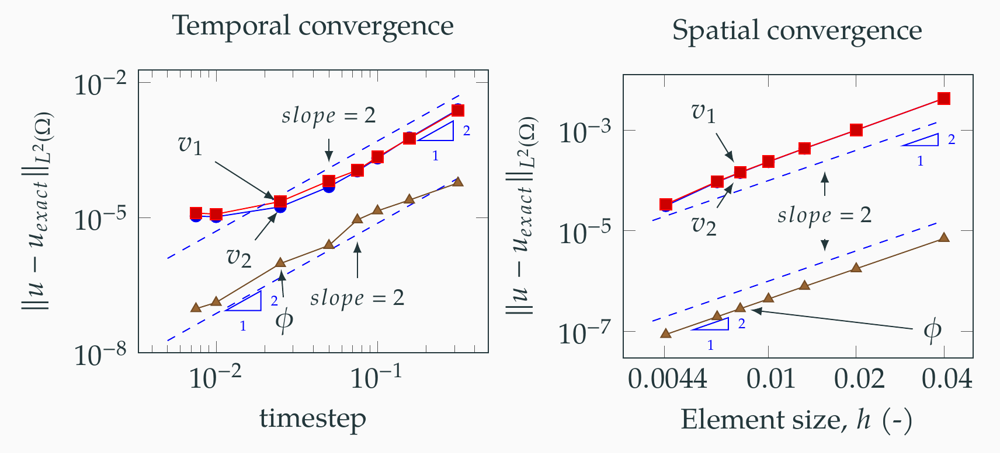
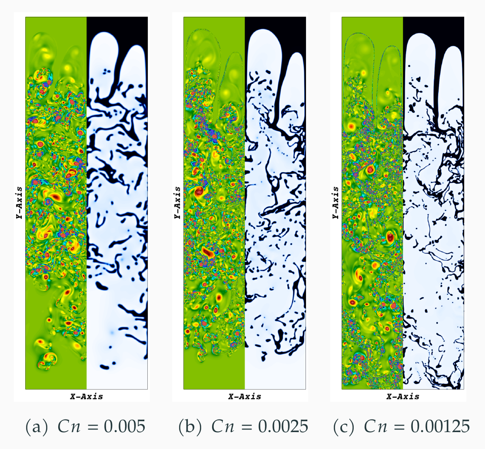
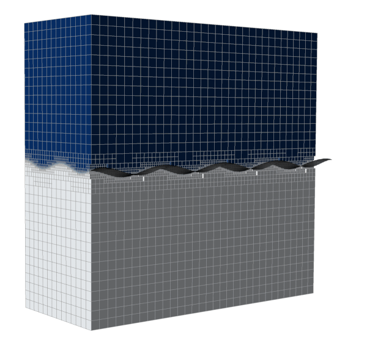

An adaptive fully-coupled second order solver for simulating two-phase flows
Research work on development of fully coupled solvers deployed on adaptive meshes to simulate two-phase flows.

In picture above: Progression of 2D Rayleigh-Taylor instability to chaotic turbulent regime for the density ratio of 1:10.
Summary
In our recent work on fully coupled solver for simulating two-phase flows by solving thermodynamically consistent Cahn-Hilliard Navier-Stokes equations (CHNS). We use fully implicit non-linear finite element based methods. The fully coupled approach solves CHNS equations in one full block minimizing the number of matrix assemblies compared to the block approach.
Highlights of the work
-
A fully coupled method with fewer matrix assemblies per time step to simulate two phase flows using the Cahn-Hilliard Navier-Stokes equations.
-
Provably energy-stable second-order scheme.
-
Conforming continuous Galerkin (cG) finite element method in space equipped with a residual-based variational multiscale (RBVMS).
-
Parallel numerical implementation using octree-based remeshing with detailed scaling analysis.
Some Key results:
Second order in space and time:
 In the Figure above: Convergence of of both spatial and temporal errors with a slope of 2 (second order).
Chaotic 2D Rayleigh-Taylor instability
 In the Figure above: Rayleigh-Taylor instability in 2D : Q-criterion of Rayleigh Taylor instability for Atwood number of 0.82$ (density ratio of 0.1). In each panel the left plot illustrates the Q-criterion, and the right plot shows corresponding interface location. These plots are zoomed insets of the domain near the interfacial instabilities.
Figure illustrates changing the thickness of interface (a computational parameter in phase field model) results in different dynamics in the chaotic regime
3D Rayleigh Taylor instability

In the Figure above: Snapshots of the mesh at various time-points in the simulation for Rayleigh-Taylor instability for Atwood number of 0.15. The figures show half of the mesh of the actual domain to illustrate the refinement around the interface of two fluids represented by the gray iso-surface of phase field = 0.0. The phase field values color the mesh, where blue represents heavy fluid and white represents light fluid. Here $t $(-) is the non-dimensional time.
This 3D Rayleigh Taylor case is one of the massively parallel adaptive mesh simulations we have done, with 2 billion unknowns at peak mesh refinement.
Publication based on this approach
- Makrand A. Khanwale, Kumar Saurabh, Milinda Fernando, Victor M Calo, James A Rossmanith, Hari Sundar, and Baskar Ganapathysubramanian. “A fully-coupled framework for solving Cahn-Hilliard Navier-Stokes equations: Second-order, energy-stable numerical methods on adaptive octree based meshes”. In: Submitted to Computer Methods in Applied Mechanics and Engineering : arXiv preprint arXiv:2009.06628 (2020).[ARXIV]